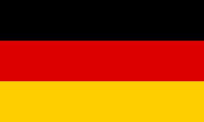
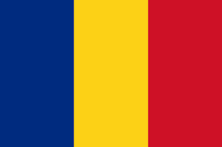
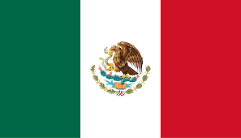
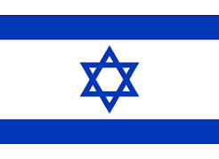
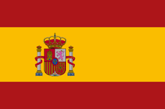

¿De qué se trató el Mundial de 1970?
La Copa Mundial de la FIFA 1970 fue la novena edición del torneo y se disputó en México entre el 31 de mayo y el 21 de junio de 1970. Representó la primera vez que la máxima cita futbolística salía de los bloques tradicionales de Europa y Sudamérica, consolidándose como un evento de vanguardia tecnológica y juego limpio.
El campeonato estuvo marcado por hitos revolucionarios: fue el primer Mundial transmitido a nivel global en televisión a color vía satélite. Para favorecer el espectáculo y la salud de los futbolistas ante el calor extremo, se introdujeron por primera vez en la historia las tarjetas amarillas y rojas, así como la posibilidad de realizar dos sustituciones por equipo durante el partido.
Brasil maravilló al planeta con un fútbol arte sin precedentes, desplegado por una escuadra considerada de manera unánime como el mejor equipo de todos los tiempos. Al consagrarse campeón por tercera vez, obtuvo el derecho de conservar de forma definitiva el trofeo original, la Copa Jules Rimet.
Informacion que tenes que saber
Info general
- Pais Anfitrion: México
- Fecha de Inicio:
31 de Mayo de 1970
(31/05/1970) - Fecha de Finalizacion:
21 de Junio de 1970
(21/06/1970) - Duracion: 21 dias
- Organizador: FIFA
- Edicion: IX
Estadisticas
- Partidos jugados: 32
- Goles anotados: 95
- Promedio de gol: 2,97
- Máximo goleador:
Gerd Müller
(10 goles) - Final:
Brasil 4 - 1 Italia - Asistencia total:
1.603.975 espectadores
info de la Ciudad
- Ciudades Sede: 5
- Selecciones Participantes: 16
- Estadios Utilizados: 5
- Estadio Principal:
Estadio Azteca
(Ciudad de México)
Podio
| Posicion | Seleccion | Bandera |
|---|---|---|
| 1º Puesto | Brasil |  |
| 2º Puesto | Italia |  |
| 3º Puesto | Alemania Federal |  |
| 4º Puesto | Uruguay |  |
(Nota: El partido por el tercer puesto fue disputado entre Alemania Federal y Uruguay, con victoria alemana por 1-0).
Historia completa de la Copa Mundial de la FIFA 1970
La Copa Mundial de la FIFA de 1970 fue la novena edición del torneo y se disputó en México entre el 31 de mayo y el 21 de junio de 1970. La FIFA eligió a México como sede en su congreso de 1964 celebrado en Tokio, superando la candidatura de Argentina. La elección causó controversia por la altitud de las ciudades mexicanas y las altas temperaturas veraniegas, obligando a las selecciones a realizar preparaciones especiales.
La organización mexicana rozó la perfección, aprovechando la infraestructura construida para los Juegos Olímpicos de 1968. La fase de clasificación dejó fuera a potencias históricas como Argentina, Francia, España y Portugal, mientras que El Salvador, Israel y Marruecos debutaron por primera vez en un Mundial.
Desarrollo del torneo
En la fase de grupos, Brasil demostró un nivel superlativo en el "grupo de la muerte", venciendo a los vigentes campeones, Inglaterra, por 1-0 en un duelo épico recordado por la legendaria atajada de Gordon Banks a un cabezazo de Pelé. En cuartos de final, Perú deslumbró con su fútbol alegre antes de caer ante el rodillo brasileño.
Las semifinales regalaron dos partidos inmortales. Brasil venció a Uruguay por 3-1, con una soberbia actuación de Pelé. En la otra llave, Alemania Federal e Italia disputaron en el Estadio Azteca el denominado "Partido del Siglo": tras empatar 1-1 en los 90 minutos, la prórroga terminó 4-3 a favor de los italianos, con el capitán alemán Franz Beckenbauer jugando con el hombro dislocado y vendado.
La gran final
La final se jugó el 21 de junio de 1970 en el Estadio Azteca ante más de 107.000 espectadores. Italia impuso su estilo defensivo en el primer tiempo, logrando empatar 1-1. Sin embargo, en la segunda mitad Brasil triturió a la defensa europea con goles de Gérson, Jairzinho y una jugada colectiva perfecta culminada por el capitán Carlos Alberto, sellando el 4-1 definitivo.
Brasil consiguió así su tercer campeonato mundial, convirtiéndose en el primer y único equipo en alzar tres Copas del Mundo, ganando el derecho de conservar de forma definitiva la Copa Jules Rimet. Jairzinho anotó en todos los partidos del torneo, un hito histórico sin precedentes.
⚽ Pelota Oficial del Mundial 1970

ADIDAS TELSTAR
El Adidas Telstar fue el balón oficial de la Copa Mundial de la FIFA México 1970. Revolucionó para siempre el diseño de los balones de fútbol, abandonando los gajos alargados de color marrón para introducir una estructura de 32 paneles poligonales cosidos a mano.
Información General
Nombre: Telstar
Fabricante: Adidas
Material: Cuero sintético cosido a mano
Color: Blanco con pentágonos negros
Paneles: 32 (20 hexágonos blancos y 12 pentágonos negros)
Torneo: Copa Mundial FIFA México 1970
Características
- Primer balón oficial fabricado por Adidas para un Mundial.
- Su nombre deriva de "Star of Television" (Estrella de la Televisión).
- El contraste negro/blanco fue diseñado para verse con claridad en TV.
- Estructura de 32 paneles que mejoró la aerodinámica del balón.
- Se convirtió en el diseño arquetípico e icónico de la pelota de fútbol.
Dato curioso
El diseño del Telstar fue creado específicamente para que los espectadores de todo el mundo pudieran seguir la trayectoria de la pelota con total claridad en las pantallas de televisión en blanco y negro de la época. Hoy sigue siendo el diseño más reconocido e icónico en el imaginario colectivo del fútbol mundial.
Selecciones Participantes
Europa
 Bulgaria
Bulgaria  Checoslovaquia
Checoslovaquia  Inglaterra (Vigente campeón) Italia
Inglaterra (Vigente campeón) Italia  Unión Soviética
Unión Soviética 
Rumania Suecia
Suecia  Bélgica
Bélgica Sudamérica
Brasil  Perú Uruguay
Perú Uruguay Norteamérica y Caribe

México (Anfitrión) El Salvador
El Salvador Asia y Oceanía

IsraelÁfrica
 Marruecos
Marruecos
Sedes |
||||
|---|---|---|---|---|
|
El Mundial de 1970 se disputó en cinco estadios monumentales repartidos por México. Aprovechando la infraestructura construida para los Juegos Olímpicos de 1968, la organización logró un certamen de altísimo nivel logístico. El Estadio Azteca de Ciudad de México fue la joya de la corona, albergando diez partidos incluyendo la gran final, ante más de 107.000 espectadores. La elección de México como sede fue polémica desde el inicio por la altitud de sus ciudades (varias a más de 2.000 metros sobre el nivel del mar) y las altas temperaturas veraniegas, lo que obligó a las selecciones a realizar preparaciones médicas especiales de aclimatación. Además, varios partidos se disputaron al mediodía para favorecer las transmisiones televisivas europeas, generando críticas por el calor extremo que sufrían los futbolistas. A pesar de las controversias, la organización mexicana fue considerada un éxito rotundo y marcó un antes y un después en la historia de los Mundiales al ser el primero transmitido en color para todo el planeta vía satélite. |
||||
| Nombre del Estadio | Estadio | Descripción | Capacidad aprox. | Partidos Jugados |
Estadio Azteca |
 |
Fue el estadio principal del Mundial y el más importante del torneo. Ubicado en Ciudad de México, albergó diez partidos incluyendo la gran final Brasil 4-1 Italia y el legendario "Partido del Siglo" entre Italia y Alemania Federal. Con capacidad para más de 107.000 espectadores, es considerado uno de los estadios más emblemáticos de la historia del fútbol mundial. | 107.000 | 10 |
Estadio Jalisco |
 |
Ubicado en Guadalajara, fue la segunda sede en importancia del torneo. Albergó ocho partidos, incluyendo el histórico Brasil vs. Inglaterra del grupo de la muerte. Con capacidad para 71.000 espectadores, fue escenario de algunos de los partidos más disputados y emocionantes de la fase de grupos. | 71.000 | 8 |
Estadio Cuauhtémoc |
 |
Sede ubicada en la ciudad de Puebla, con capacidad aproximada para 36.000 espectadores. Albergó tres partidos durante la fase de grupos del torneo. Es uno de los estadios más tradicionales de México y sigue siendo la casa del Club Puebla en la actualidad. | 36.000 | 3 |
Estadio Luis Dosal (Nemesio Díez) |
 |
Estadio ubicado en la ciudad de Toluca, con capacidad para 27.000 espectadores. Fue sede de cuatro encuentros durante la fase de grupos. Actualmente conocido como Estadio Nemesio Díez, es la casa del Deportivo Toluca F.C. | 27.000 | 4 |
Estadio Nou Camp |
 |
Estadio ubicado en la ciudad de León, con capacidad para 24.000 espectadores. Fue la sede con mayor número de partidos en la fase de grupos después del Azteca y el Jalisco, albergando siete encuentros. A pesar de su menor tamaño, fue uno de los escenarios más animados del torneo. | 24.000 | 7 |
Arbitros de la Copa Mundial de la FIFA 1970 por pais
| Arbitros | Pais |
|---|---|
| Tofiq Bahramov | |
| Kurt Tschenscher | |
| Ferdinand Marschall |  |
| Vital Loraux | |
| Jack Taylor | |
| Roger Machin |  |
| Ortíz de Mendíbil |  |
| Diego De Leo | |
| Nicolae Rainea | |
| Abraham Klein | |
| Ali Kandil |  |
| Domingo Massaro |  |
| Ángel Norberto Coerezza |  |
| Ramón Barreto | |
| Arturo Yamasaki | |
| Omar Delgado |  |
| Abel Aguilar Elizalde | |
| Alfonso González Archundia | |
| Henry Landauer |  |
Resumen del torneo — Copa Mundial de la FIFA 1970
Fase de grupos
Grupo 1
- Unión Soviética (5)
- México (5)
- Bélgica (2)
- El Salvador (0)
Unión Soviética
Bélgica
3:0 (1:0)
El Salvador
Unión Soviética
4:1 (3:0)
Bélgica
El Salvador
Unión Soviética
2:0 (0:0)
El Salvador
Bélgica
México y URSS terminaron igualados en puntos. El orden se decidió por sorteo, clasificando ambos. Fue el único grupo resuelto de esa manera en el torneo.
| Seleccion | Pts. | PJ | PG | PE | PP | GF | GC | Dif. |
|---|---|---|---|---|---|---|---|---|
| Unión Soviética |
5 | 3 | 2 | 1 | 0 | 6 | 1 | +5 |
| México | 5 | 3 | 2 | 1 | 0 | 5 | 0 | +5 |
| Bélgica |
2 | 3 | 1 | 0 | 2 | 4 | 5 | -1 |
| El Salvador |
0 | 3 | 0 | 0 | 3 | 0 | 9 | -9 |
Grupo 2
- Italia (4)
- Uruguay (3)
- Suecia (3)
- Israel (2)
Uruguay
2:0 (1:0)
Israel
Italia
1:0 (1:0)
Suecia
Uruguay
0:0 (0:0)
Italia
Suecia
1:1 (1:0)
Israel
Suecia
1:0 (0:0)
Uruguay
Italia
0:0 (0:0)
Israel
| Seleccion | Pts. | PJ | PG | PE | PP | GF | GC | Dif. |
|---|---|---|---|---|---|---|---|---|
| Italia |
4 | 3 | 1 | 2 | 0 | 1 | 0 | +1 |
| Uruguay |
3 | 3 | 1 | 1 | 1 | 2 | 1 | +1 |
| Suecia |
3 | 3 | 1 | 1 | 1 | 2 | 2 | 0 |
| Israel | 2 | 3 | 0 | 2 | 1 | 1 | 3 | -2 |
Grupo 3
- Brasil (6)
- Inglaterra (4)
- Rumania (2)
- Checoslovaquia (0)
Brasil
4:1 (1:1)
Checoslovaquia
Inglaterra
Brasil
1:0 (0:0)
Inglaterra
Partido épico recordado por la legendaria atajada de Gordon Banks al cabezazo de Pelé, considerada la mejor parada de la historia del fútbol.
Brasil
3:2 (1:1)
Rumania
Inglaterra
1:0 (0:0)
Checoslovaquia
Checoslovaquia
| Seleccion | Pts. | PJ | PG | PE | PP | GF | GC | Dif. |
|---|---|---|---|---|---|---|---|---|
| Brasil |
6 | 3 | 3 | 0 | 0 | 8 | 3 | +5 |
| Inglaterra |
4 | 3 | 2 | 0 | 1 | 2 | 1 | +1 |
| Rumania | 2 | 3 | 1 | 0 | 2 | 4 | 5 | -1 |
| Checoslovaquia |
0 | 3 | 0 | 0 | 3 | 2 | 7 | -5 |
Grupo 4
- Alemania Federal (7)
- Perú (4)
- Bulgaria (1)
- Marruecos (2)
Perú
3:2 (0:1)
Bulgaria
Marruecos
Bulgaria
Perú
3:0 (0:0)
Marruecos
Perú
Marruecos
1:1 (0:1)
Bulgaria
| Seleccion | Pts. | PJ | PG | PE | PP | GF | GC | Dif. |
|---|---|---|---|---|---|---|---|---|
| Alemania Federal | 6 | 3 | 3 | 0 | 0 | 10 | 4 | +6 |
| Perú |
4 | 3 | 2 | 0 | 1 | 7 | 5 | +2 |
| Marruecos |
2 | 3 | 0 | 1 | 2 | 2 | 6 | -4 |
| Bulgaria |
1 | 3 | 0 | 1 | 2 | 5 | 9 | -4 |
Cuartos de Final
Cuartos de Final
Unión Soviética 0 Uruguay 1 Italia 4 Brasil 4 Perú 2 Inglaterra 2Tercer puesto y Final
El partido por el tercer puesto se disputó entre Alemania Federal y Uruguay en el Estadio Azteca, con victoria alemana por 1-0 gracias a un gol de Wolfgang Overath. La gran final se jugó el 21 de junio de 1970 ante más de 107.000 espectadores en el mismo estadio.
Uruguay
Semifinal y Final
Semifinales
Brasil 3 Uruguay 1 Italia 4Final
Brasil 4 Italia 1Máximos goleadores — Copa Mundial de la FIFA 1970
| Jugador | Goles | Pais |
|---|---|---|
| Gerd Müller | 10 | |
| Jairzinho | 7 | |
| Teófilo Cubillas | 5 | |
| Pelé | 4 | |
| Anatoliy Byshovets | 4 | |
| Roberto Rivelino | 3 | |
| Uwe Seeler | 3 | |
| Gigi Riva | 3 | |
Equipo Estelar — Copa Mundial de la FIFA 1970
El equipo ideal del Mundial de 1970 fue elegido por los medios de comunicación internacionales, destacando la dominancia de Brasil con seis representantes en el once ideal.
| Posición | Jugador | Pais |
|---|---|---|
| Portero | Ladislao Mazurkiewicz | |
| Defensa | Carlos Alberto | |
| Defensa | Giacinto Facchetti | |
| Defensa | Franz Beckenbauer | |
| Defensa | Bobby Moore | |
| Mediocampista | Gérson | |
| Mediocampista | Roberto Rivelino | |
| Mediocampista | Bobby Charlton | |
| Delantero | Jairzinho | |
| Delantero | Gerd Müller | |
| Delantero | Pelé | |
Controversias de la Copa Mundial de la FIFA 1970
A pesar de ser recordado como el Mundial del "Juego Limpio" (fue el primer torneo en la historia en el que ningún jugador fue expulsado con tarjeta roja), existieron fuertes polémicas de corte político y organizativo que marcaron el certamen.
-
Partidos al mediodía por la televisión europea
Para complacer a las cadenas europeas que pagaban los derechos de transmisión satelital, la FIFA fijó varios partidos de alta intensidad al mediodía bajo el implacable sol del verano mexicano y en condiciones de gran altitud. Esto desató protestas de entrenadores como Alf Ramsey (Inglaterra) y Ferruccio Valcareggi (Italia), quienes denunciaron que se estaba poniendo en riesgo la salud de los futbolistas.
-
La "Guerra del Fútbol" previa al torneo
En la previa al torneo estalló una enorme crisis diplomática y bélica en Centroamérica conocida como la "Guerra del Fútbol". Las selecciones de El Salvador y Honduras debieron enfrentarse en una eliminatoria sumamente tensa. Los violentos disturbios entre aficiones en los estadios agravaron los conflictos fronterizos preexistentes, desencadenando un conflicto armado de seis días entre ambos países justo antes de que El Salvador sellara su clasificación al Mundial.
-
El arresto de Bobby Moore en Colombia
Durante la escala de preparación de Inglaterra en Colombia, el capitán británico Bobby Moore fue falsamente acusado del robo de una costosa pulsera de esmeraldas en una joyería de Bogotá. Moore fue arrestado y retenido durante varios días en régimen de prisión domiciliaria. La prensa inglesa denunció el incidente como un complot psicológico para desestabilizar al campeón del mundo antes de su debut en el torneo.
-
El "Partido del Siglo" y sus secuelas
La semifinal entre Italia y Alemania Federal dejó secuelas físicas y tácticas. La prensa italiana criticó con dureza el planteamiento en la final del técnico Valcareggi, quien por una absurda rivalidad interna solo alineó a la estrella Gianni Rivera en los últimos seis minutos del partido contra Brasil, cuando el equipo ya estaba completamente desgastado y goleado.
-
Polémica en el Grupo 1 por el sorteo
México y la Unión Soviética terminaron exactamente igualados en puntos, goles a favor, goles en contra y diferencia de goles en el Grupo 1. La FIFA resolvió el desempate mediante un simple sorteo para determinar el orden de clasificación, un método considerado arbitrario y poco deportivo que generó críticas generalizadas en la prensa internacional.
-
El uso del balón Telstar y la ventaja de Brasil
Algunos entrenadores europeos denunciaron que el nuevo balón Adidas Telstar, con su peculiar diseño de paneles negros y blancos, favorecía a la selección brasileña, cuyo estilo de juego técnico y físico se adaptaba mejor a las características del nuevo esférico. Sin embargo, la FIFA descartó cualquier irregularidad y el Telstar se consagró como el balón más icónico de la historia de los Mundiales.
Tabla de Rendimiento y Posiciones Finales
| Posicion | Seleccion | Pts | PJ | PG | PE | PP | GF | GC | DG | Rendimiento |
|---|---|---|---|---|---|---|---|---|---|---|
| 1 | Brasil |
12 | 6 | 6 | 0 | 0 | 19 | 7 | +12 | 100% |
| 2 | Italia |
8 | 6 | 3 | 2 | 1 | 10 | 8 | +2 | 66,7% |
| 3 | Alemania Federal | 10 | 6 | 5 | 0 | 1 | 17 | 10 | +7 | 83,3% |
| 4 | Uruguay |
5 | 6 | 2 | 1 | 3 | 4 | 5 | -1 | 50% |
| 5 | Unión Soviética |
5 | 4 | 2 | 1 | 1 | 6 | 2 | +4 | 62,5% |
| 6 | México | 5 | 4 | 2 | 1 | 1 | 6 | 4 | +2 | 62,5% |
| 7 | Perú |
4 | 4 | 2 | 0 | 2 | 9 | 9 | 0 | 50% |
| 8 | Inglaterra |
4 | 4 | 2 | 0 | 2 | 4 | 4 | 0 | 50% |
| 9 | Suecia |
3 | 3 | 1 | 1 | 1 | 2 | 2 | 0 | 50% |
| 10 | Bélgica |
2 | 3 | 1 | 0 | 2 | 4 | 5 | -1 | 33,3% |
| 11 | Rumania | 2 | 3 | 1 | 0 | 2 | 4 | 5 | -1 | 33,3% |
| 12 | Israel | 2 | 3 | 0 | 2 | 1 | 1 | 3 | -2 | 33,3% |
| 13 | Bulgaria |
1 | 3 | 0 | 1 | 2 | 5 | 9 | -4 | 16,6% |
| 14 | Marruecos |
2 | 3 | 0 | 1 | 2 | 2 | 6 | -4 | 16,6% |
| 15 | Checoslovaquia |
0 | 3 | 0 | 0 | 3 | 2 | 7 | -5 | 0% |
| 16 | El Salvador |
0 | 3 | 0 | 0 | 3 | 0 | 9 | -9 | 0% |
- PJ: PARTIDOS JUGADOS
- PG: PARTIDOS GANADOS
- PE: PARTIDOS EMPATADOS
- PP: PARTIDOS PERDIDOS
- GF: GOLES A FAVOR
- GC: GOLES EN CONTRA
- DG: DIFERENCIA DE GOL
- RENDIMIENTO: BASADO EN LA EFECTIVIDAD DE PUNTOS OBTENIDOS SOBRE DISPUTADOS (2 puntos por PG, 1 punto por PE)